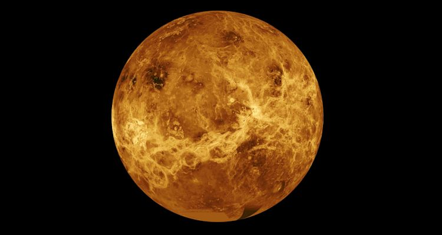

Mercury
Moons: 0
Mass: 5.5% of Earth
Diameter: 3031 miles
Year: 88 Earth days
Day: 58.7 Earth days
Temperature: -300 to +800 degrees F
Distance from the Sun: 1st planet from the sun, 36 million miles
Type of Planet: Terrestrial (has a hard rocky surface)
The distances of planets from each other and from the Sun are often measured in Astronomical Units, AU. One AU is the average distance between the Earth and the Sun, 93 million miles, or 150 million kilometres. Using this system of measurement, Mercury is 0.39 AU from the Sun.
Because Mercury goes round the Sun so quickly (88 days per orbit), the planet was called after the messenger of the Roman Gods. The messenger Mercury, or Hermes as the Greeks knew him, is usually shown as having wings on his helmet or on his sandals.
Unlike the Earth and most other planets, Mercury only turns very slowly on its axis, taking 59 days to complete the turn from day to night.
Mercury is one of five planets that can be seen without using a telescope: Mercury, Venus, Mars, Jupiter and Saturn.
